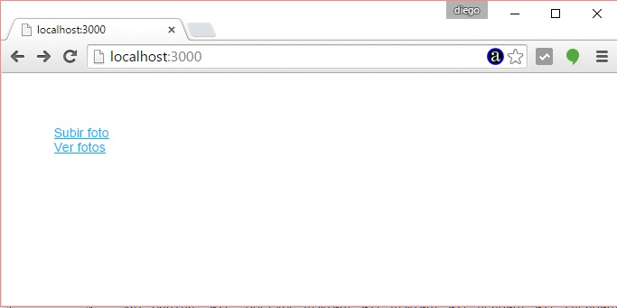
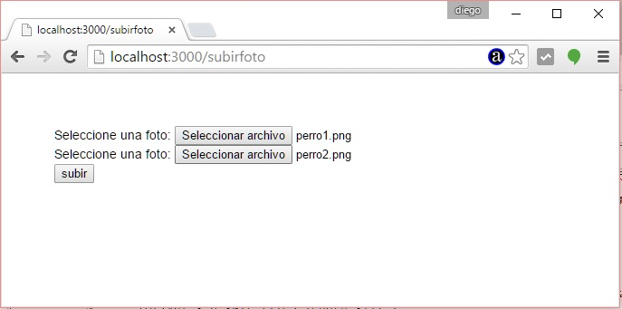
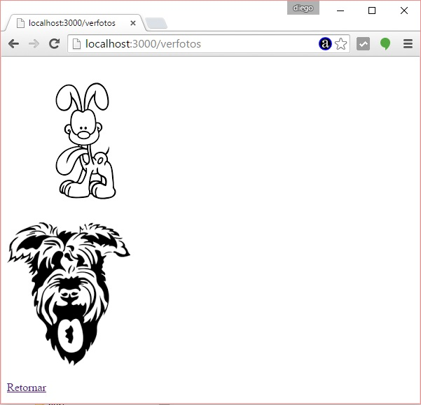

Cuando tenemos que implementar formularios que contengan upload de archivos el módulo 'body-parser' no los puede procesar. Para estas situaciones hay otros módulos disponibles.
Veremos el módulo 'multer' que nos permite administrar la subida de archivos a nuestro servidor.
Problema
Implementar una página con dos hipervínculos. El primero nos permite acceder a un formulario web para la carga de dos fotos, las mismas deben ser almacenadas en el servidor. El segundo hipervínculo debe mostrar todas las fotos subidas hasta ese momento.
Paso 1
Como vamos a utilizar el Framework Express y en conceptos anteriores ya instalamos el 'express-generator' nos posicionamos en el directorio 'c:\ejerciciosnodejs' (o el directorio donde esta almacenando todos sus proyectos) y procederemos a crear nuestra aplicación Node.js utilizando Express y su generador de código:c:\ejerciciosnodejs> express ejercicio26 --hbs
Estamos llamando al programa 'express' y le pasamos dos parámetros, el primero indica el nombre de nuestro proyecto y el segundo el sistema de plantillas que utilizaremos para generar nuestras páginas dinámicas (handlebars)
Ya tenemos creado la carpeta ejercicio26 y dentro de esta los archivos y subcarpetas básicos:
ejercicio26
app.js
package.json
bin
www
public
images
javascripts
stylesheets
router
index.js
users.js
views
error.hbs
index.hbs
layout.hbs
Descendemos a la carpeta ejercicio26 e instalamos todas las dependencias de módulos:
c:\ejerciciosnodejs\ejercicio26>npm install
Cuando llamamos a 'npm install' sin ningún otro parámetro lo que hace es buscar el archivo 'package.json' y proceder a instalar todos los módulos especificados en la propiedad 'dependencies'.
Ahora ya tenemos creado la carpeta 'node_modules' con las 7 carpetas que coinciden con las dependencias especificadas en el archivo json:
body-parser
cookie-parser
debug
express
hbs
morgan
serve-favicon
Recordemos que hasta ahora hemos creado un esqueleto funcional de una aplicación Node.js utilizando el framework Express y lo podemos ejecutar:
Podemos ejecutar nuestra aplicación mínima creada con el 'express-generador':
c:\ejerciciosnodejs\ejercicio26>node ./bin/www
Y ya podemos solicitar al servidor la página raíz del sitio:

Recordemos que otra forma de iniciar a nuestro proyecto en Node.js cuando definimos el archivo package.json:
En lugar de escribir:
c:\ejerciciosnodejs\ejercicio26>node ./bin/www
Escribimos:
c:\ejerciciosnodejs\ejercicio26>npm start
Recordemos que en el archivo json hay una propiedad start donde definimos el archivo que inicia nuestra aplicación:
"scripts": {
"start": "node ./bin/www"
},
Paso 2
Pasamos a instalar el módulo 'multer' desde la línea de comandos:
c:\ejerciciosnodejs\ejercicio26>npm install multer --save
Después de esto podemos abrir el archivo package.json y ver que se agregó la nueva dependencia "multer" por indicar --save:
{
"name": "ejercicio26",
"version": "0.0.0",
"private": true,
"scripts": {
"start": "node ./bin/www"
},
"dependencies": {
"body-parser": "~1.13.2",
"cookie-parser": "~1.3.5",
"debug": "~2.2.0",
"express": "~4.13.1",
"hbs": "~3.1.0",
"morgan": "~1.6.1",
"multer": "^1.0.3",
"serve-favicon": "~2.3.0"
}
}
También si entramos en la carpeta node-modules veremos que se encuentra instalado el módulo "multer".
Paso 3
Crearemos dos carpetas, una donde se almacenarán temporalmente los archivos que llegan al servidos desde un navegador y otra carpeta donde los copiaremos desde la carpeta temporal a la definitiva.
La primer carpeta a crear dependerá de la raíz de nuestro sitio y la llamaremos 'uploads' y la segundo carpeta la crearemos dentro de la carpeta 'public' y la llamaremos 'fotos':
ejercicio26
app.js
package.json
uploads
bin
www
public
fotos
images
javascripts
stylesheets
router
index.js
users.js
views
error.hbs
index.hbs
layout.hbs
Paso 4
Ahora tenemos que modificar el archivo index.hbs que se encuentra en la carpeta "views" y disponemos dos enlaces al formulario de upload y a la visualización de las fotos:
<a href="/subirfoto">Subir foto</a> <br> <a href="/verfotos">Ver fotos</a>
También creamos otra plantilla llamada 'subirfoto.hbs' y cuyo contenido es:
<form method="post" action"/subirfoto" enctype="multipart/form-data"> Seleccione una foto: <input type="file" name="foto"> <br> Seleccione una foto: <input type="file" name="foto"> <br> <input type="submit" value="subir"> </form>
Es importante ver que a los dos controles de tipo file le definimos el mismo valor en la propiedad name, es decir con el valor 'foto'.
Paso 5
En el archivo index.js de la carpeta routes disponemos el siguiente código:
var express = require('express');
var router = express.Router();
var multer = require('multer');
var upload = multer({dest: './uploads/'});
var fs = require('fs');
/* GET home page. */
router.get('/', function(req, res, next) {
res.render('index');
});
router.get('/subirfoto', function(req, res, next) {
res.render('subirfoto');
});
router.post('/subirfoto', upload.array('foto', 2), function(req, res, next) {
for(var x=0;x<req.files.length;x++) {
//copiamos el archivo a la carpeta definitiva de fotos
fs.createReadStream('./uploads/'+req.files[x].filename).pipe(fs.createWriteStream('./public/fotos/'+req.files[x].originalname));
//borramos el archivo temporal creado
fs.unlink('./uploads/'+req.files[x].filename);
}
var pagina='<!doctype html><html><head></head><body>'+
'<p>Se subieron las fotos</p>'+
'<br><a href="/">Retornar</a></body></html>';
res.send(pagina);
});
router.get('/verfotos', function(req, res, next) {
fs.readdir('./public/fotos/', function(err, files) {
var pagina='<!doctype html><html><head></head><body>';
for(var x=0;x<files.length;x++) {
pagina+='<img src="fotos/'+files[x]+'"><br>';
}
pagina+='<br><a href="/">Retornar</a></body></html>';
res.send(pagina);
});
});
module.exports = router;
Requerimos el módulo 'multer' y seguidamente llamamos a la función multer pasando como dato el directorio donde se suben los archivos:
var multer = require('multer'); var upload = multer({dest: './uploads/'});Requerimos el módulo 'fs' para la copia de archivos:
var fs = require('fs');
Cuando accedemos a la raíz del sitio nos muestra la plantilla index.hbs:
router.get('/', function(req, res, next) {
res.render('index');
});
En el navegador tenemos:

Cuando seleccionamos 'Subir foto' se carga la plantilla subirfoto:
router.get('/subirfoto', function(req, res, next) {
res.render('subirfoto');
});
En el navegador tenemos:

Cuando se presiona el botón submit se ejecuta:
router.post('/subirfoto', upload.array('foto', 2), function(req, res, next) {
for(var x=0;x<req.files.length;x++) {
//copiamos el archivo a la carpeta definitiva de fotos
fs.createReadStream('./uploads/'+req.files[x].filename).pipe(fs.createWriteStream('./public/fotos/'+req.files[x].originalname));
//borramos el archivo temporal creado
fs.unlink('./uploads/'+req.files[x].filename);
}
var pagina='<!doctype html><html><head></head><body>'+
'<p>Se subieron las fotos</p>'+
'<br><a href="/">Retornar</a></body></html>';
res.send(pagina);
});
En el segundo parámetro indicamos el objeto upload que creamos en las primeras líneas llamando al método array y pasando como parámetro la propiedad name del formulario html y un 2 indicando la cantidad de archivos que llegarán.
Disponemos un for para recorrer el vector que contiene todos los datos de los archivos subidos:
for(var x=0;x<req.files.length;x++) {
En cada vuelta del for copiamos el archivo que se encuentra en la carpeta upload a la carpeta fotos a un archivo que es igual al nombre original:
fs.createReadStream('./uploads/'+req.files[x].filename).pipe(fs.createWriteStream('./public/fotos/'+req.files[x].originalname));
Después de copiarlo procedemos a eliminar el archivo que se subió a la carpeta uploads:
fs.unlink('./uploads/'+req.files[x].filename);
Cuando seleccionamos la opción 'Ver fotos' de la página principal del sitio se ejecuta:
router.get('/verfotos', function(req, res, next) {
fs.readdir('./public/fotos/', function(err, files) {
var pagina='<!doctype html><html><head></head><body>';
for(var x=0;x<files.length;x++) {
pagina+='<img src="fotos/'+files[x]+'"><br>';
}
pagina+='<br><a href="/">Retornar</a></body></html>';
res.send(pagina);
});
});
Mediante el objeto 'fs' llamamos al método readdir que obtiene una lista con todos los archivos contenidos en la carpeta que le pasamos en el primer parámetro:
fs.readdir('./public/fotos/', function(err, files) {
Mediante un for recorremos el vector y generamos todas los elementos HTML img con la propiedad src respectiva:
for(var x=0;x<files.length;x++) {
pagina+='<img src="fotos/'+files[x]+'"><br>';
}
En el navegador tenemos:

Este proyecto lo puede descargar en un zip con todos los archivos desde este enlace : ejercicio26